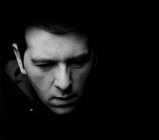

ASC
NONPLUS+/EXIT RECORDS/AUTONOMIC/AUXILIARY
http://theasc.blogspot.com
Growing up in different areas of England, on a steady diet of Motown, Techno & the blossoming UK Hardcore scene, his productions manage to encompass such a wide range of these influences. Starting out DJ’ing with a bunch of like- minded friends on pirate radio stations while still in school, ASC soon found himself getting interested in how the tracks he was playing were made. This led to an investment in a modest studio setup, which proved to be a defining point in James’ life.
An initial batch of tracks were written between 1997-1999, and eventually a 7 track demo appeared, of which 6 were signed to West Midlands based Nu Directions, and the remaining track was signed to LTJ Bukem’s well known Good Looking Records. After a handful of successful releases on these labels and a few others, James started his own label, Covert Operations, which went on to put out a total of 30 vinyl releases & 8 CD’s between 2000 & 2009.
After receiving much praise for his intricately detailed and well thought out productions, ASC amassed a serious back catalogue of releases on some of the most forward thinking labels out there, such as 720 Degrees, Offshore, and Paradox’s Outsider label.
2010 has seen the release of Nothing Is Certain, the album James released on Instra:mental’s popular NonPlus+ label, to great critical acclaim. Widespread reviews have cited it as one of the best electronic music long players for the year. Hot on the heels of that, ASC has launched his new imprint, Auxiliary.
If this wasn't enough to keep ASC busy, September 2010 saw the release of a project entitled 'Music For Pictures'. Liquid Cinema's head honcho Jeff Rona asked James to create a library of music strictly with the idea of them being used for TV, film and other forms of media in mind. The title was a nod to the classic Brian Eno LP. Music For Film, and what James has come up with, might well be praised with the same regard in many years to come.
You could say the future is bright for ASC, but that’s more than an understatement.